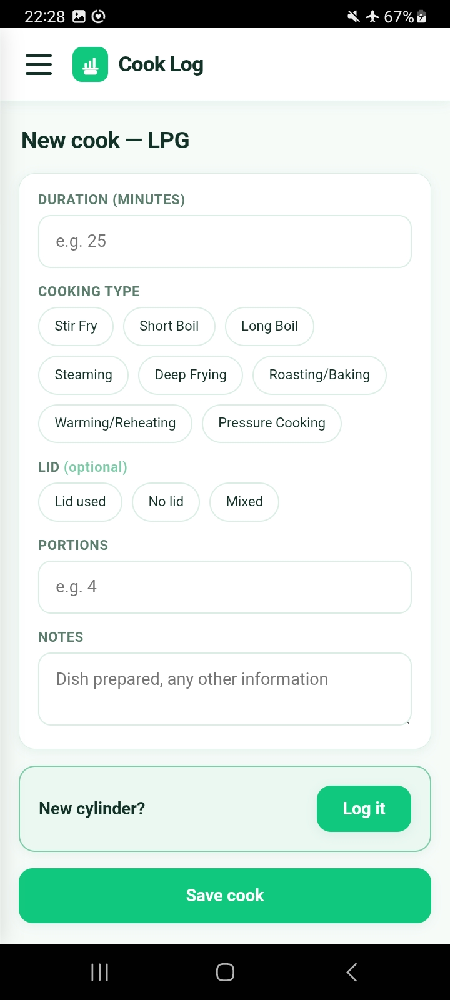
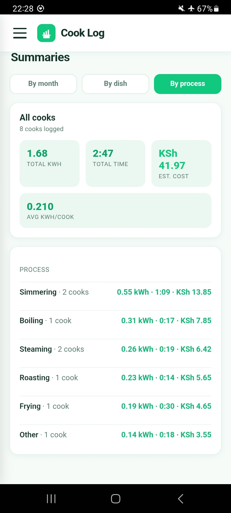

Introducing CookLog — and an invitation to help us test it
By GFN Solutions
Today we're introducing CookLog, a lightweight, offline-first app for logging household cooking energy use — and inviting a small group of early testers in Kenya and India to help us put it through its paces.


Why we built CookLog
If you work in clean cooking, you know the measurement problem. Understanding how households actually cook — which fuels they use, how often, what they spend, and how they combine fuels across a week — is foundational to everything from pilot design to consumer finance. Yet the standard tools for capturing this are heavy: paper diaries, enumerator visits, and long surveys that ask a lot of participants while still leaving gaps.
The Modern Energy Cooking Services (MECS) programme has done influential work here through its Cooking Diaries methodology, in which households record their cooking events, fuels, and appliances over several weeks. It's a rich method, and successive iterations of it point clearly in one direction: reduce the burden on participants, digitise data capture, and make the instrument light enough that people can keep it up over time on their own.
CookLog is our attempt to build exactly that — a digital, diary-light instrument in the spirit of the MECS cooking diaries agenda. It's designed for real-world conditions: intermittent connectivity, shared phones, and entry-level Android devices.
What CookLog does
At its core, CookLog lets a household record two simple things:
- Cooking events — what was cooked, on which appliance, with which fuel
- Fuel purchases and refills — when fuel was bought, how much, and at what cost
From those two streams, the app does the analytical heavy lifting — and the most direct benefit lands with the household itself.
See what your cooking actually costs
Most of us have only a rough sense of what we spend on cooking fuel. A cylinder here, a charcoal purchase there, an electricity bill that mixes cooking with everything else. CookLog turns your own logs into a clear picture: your weekly and monthly cooking spend, broken down by fuel, built from your actual purchases rather than guesswork.
It does this through refill-cycle cost modelling — reconstructing what each fuel truly costs you from one refill to the next. Over a few weeks of logging, you get an honest answer to a question most households can only estimate: what does it cost us to cook? That makes it far easier to compare fuels, spot expensive habits, and decide whether a switch — say, adding an induction cooker or moving from charcoal to LPG — would actually save you money.
Capture how you really cook
Most households use two or three fuels side by side. CookLog records each cooking method and appliance separately, so your real cooking pattern shows up in your data — including how you mix fuels across the week.
Design decisions we made along the way
- Offline-first. Everything works without a connection; data syncs when the network allows.
- Low-friction sign-in. Sign in with your phone number, with an optional PIN for account recovery.
- Consent built in. Research consent is captured clearly and explicitly during onboarding.
- Web and Android at parity. The same app runs in the browser and as a native Android app, so you can use whichever suits you.
We're inviting a small group of testers
We're opening CookLog to a select group of early testers across Kenya and India. This is a deliberately small, hands-on phase — we want people who will log their cooking honestly for a few weeks and tell us where the app falls short. Invited testers will receive the app directly from us, along with simple setup instructions.
Taking part is straightforward: log your cooking and fuel purchases as they happen for at least two weeks, then share what you find — bugs, confusing screens, features you wish existed.
In return, you'll be among the first to see your own cooking economics laid out clearly — your weekly and monthly spend by fuel, drawn from your real purchases — and you'll shape a tool built for households and researchers across our region. Early testers will also have first access to everything we release next.
If you'd like to take part, get in touch and become a CookLog early tester — tell us a little about your cooking setup, the fuels and appliances you use, and where you're based. We'll be selecting a small initial cohort across Kenya and India.
What's next
This is the start of a longer journey. On our roadmap: richer summaries for households, better tools for pilot administrators, and tighter alignment with established research protocols. For now, the goal is simple: make it genuinely easy for a household to record how they cook — and give them a clear view of what it costs.
Have thoughts or questions about this post? Write to us at hello@gfn.solutions.